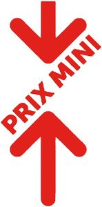

Trade Mark Journal No.2025/016 18 April 2025
WO0000001836843 (1,3,4,5,6,7,8,9,10,11,16,18,21,24,25,28,29,30,31,32,33)
Office of origin: European Union Intellectual Property Office (EUIPO)
Date of International Registration:4 September 2024
Date of designation in the UK:
4 September 2024

Red (Red Pantone 485 C BICHRO C 00%, M 100%, Y 100%, K 00%)
International priority date claimed: 13 March 2024
(European Union Intellectual Property Office (EUIPO))
(018998532)
- Class 1
- Manures and chemicals intended for use in agriculture, horticulture and forestry; chemical products for use in industry, science, photography, as well as in agriculture, horticulture and forestry; chemical substances for preserving foodstuffs; adhesives for use in industry; preserving salt, other than for foodstuffs.
- Class 3
- Bleaching preparations and other substances for laundry use; cleaning, polishing, degreasing and abrasive preparations; toiletry products; preparations for oral hygiene; beauty care and body cleaning preparations; soaps; perfumes; deodorants for personal use [perfumery]; essential oils and aromatic extracts; make-up removing products; shaving products; preservatives for leather (polishes); creams for leather.
- Class 4
- Industrial oils and greases; lubricants; dust-absorbing, wetting and binding compositions; fuels (including motor spirit) and illuminants; firelighters; candles and wicks for lighting; firewood.
- Class 5
- Pharmaceutical and veterinary products; sanitary products for medicine; dietetic food and substances for medical or veterinary use; food for babies; dietary supplements for humans and animals; plasters, material for dressings; disinfectants; products for destroying vermin; fungicides, herbicides; absorbent articles for personal hygiene; feminine hygiene products; diapers for babies and incontinent individuals; chemical preparations for medical or pharmaceutical use; medicinal herbs; medicinal herbal teas; parasiticides.
- Class 6
- Common metals and their alloys; metal elements for building; non-electric cables and wires of metal; metal packaging containers; boxes, chests and containers of metal, safes; pipes of metal; ironmongery and small items of metal hardware; metal products, namely nails, screws, nuts, rivets, lawn brushers, tool handles, greenhouse frames, greenhouses, silos, traps for wild animals, statues or statuettes made of common metals, coat hooks, latticework and trellises, connectors, valves (other than parts of machines), reels, vats, weather vanes, basins, floors, fences, building panels, pergolas, gates, barriers, swimming pools, ladders, stakes, gratings, tubes, door handles, doors, bolts, dowels.
- Class 7
- Sweeping, cleaning, washing and laundering machines and machine tools; electric household appliances and instruments, food processors, mixers, cleaning machines; electric fruit presses for household use; peeling machines; electric hand drills; machines for sewing, for knitting; washing machines, laundry and dish washing machines; spin dryers [not heated]; vacuum cleaners; vacuum cleaner bags; electric shoe polishers; machines and machine tools, for household, leisure or gardening purposes; printing machines; machine couplings and transmission components (other than for land vehicles); electric welding apparatus; laundry washing machines.
- Class 8
- Hand-operated hand tools and implements; cutlery (non-electric); table forks; knives; spoons (table cutlery); table cutlery made of precious metal; side arms, other than firearms; razors; apparatus for electric hair removal; non-electric can openers; sharpening instruments; beard clippers; shaving cases; electric and non-electric hair clippers for personal use; curling tongs; scissors; vegetable knives; non-electric pizza cutters; choppers; vegetable choppers; razor cases; lawnmowers; nail extractors; tool belts [holders]; manicure sets, pedicure sets; electric irons; gimlets [tools].
- Class 9
- Scientific (other than for medical use), nautical, surveying, photographic, cinematographic, optical, weighing, measuring, signaling, checking (supervision), rescue (life-saving) apparatus and instruments; teaching apparatus and instruments; apparatus and instruments for conducting, switching, transforming, accumulating, regulating or controlling electricity; equipment for electricity conduits (wires, electric cables), electric switches, plugs, sockets and other contacts, fuses, covers for electric outlets; electric cells (batteries); ignition batteries; electric couplings; apparatus for sound or image recording, transmission and reproduction; amplifiers; headphones; loudspeakers; magnetic recording media; acoustic, magnetic, optical disks, audio and video compact disks; digital versatile disk players (DVD players); camcorders; videotapes; facsimile machines; telephone apparatus; adapters used for telephones; battery chargers for telephones; bags, covers and cases for mobile telephones and telephone equipment; telephone answering machines; hands-free kits for telephones; television sets, antennas; photographic transparencies, projection apparatus and screens; flash bulbs (photography); exposed films; cases especially made for photographic apparatus and instruments; data processing apparatus, computers, computer peripheral devices, readers (computer equipment); software, floppy disks; modems; downloadable electronic publications; electronic agendas; video game cartridges; binoculars (optics), spectacles (optics), contact lenses, spectacle cases; integrated circuit cards [smart cards]; magnetic cards; credit and payment cards; gift cards for payment; magnetic identity cards; encoded loyalty cards; telephone cards; directional compasses; life belts and jackets for divers, masks and diving suits; scales; protective helmets; protection devices for personal use against accidents; nets for protection against accidents; clothing for protection against accidents, irradiation and fire; barometers; alcohol meters; fire extinguishers; egg timers [sandglasses]; electric locks; electric door bells; alarms; anti-theft alarm devices; magnets; decorative magnets.
- Class 10
- Contraceptive devices; surgical, medical, dental and veterinary apparatus and instruments; clothing, headwear and footwear, orthopedic apparatus and support apparatus for medical use; feeding bottles; feeding bottle teats; massage apparatus.
- Class 11
- Apparatus for lighting, heating, steam generating, cooking, refrigerating, freezing, deep freezing, drying, ventilating, distributing water and sanitary installations; electric air conditioning apparatus, household electrothermic appliances for heating, steam generating, cooking and drying; coffee makers, deep fryers, toasters, electric waffle irons, electric yogurt makers, hand dryers; electric waffle irons; electric heaters for feeding bottles; ventilation hoods; gas lighters; light bulbs; electric light bulbs; lamps, lamp globes, Chinese lanterns, lanterns for lighting, fairy lights for festive decoration, chandeliers, fountains, refrigerating cabinets; electric pressure cookers; electric kettles; anti-splash tap nozzles; roasting spits; tanning apparatus; coffee roasters; electric coffee percolators; bed warmers; foot warmers, electric or non-electric; plate warmers; stoves; hair dryers; freezers; heated blankets not for medical use; kilns, cookers; microwave ovens [cooking apparatus]; electric radiators; electric waffle irons; furnaces (other than for experimental purposes); electric deep fryers; fruit roasters; gas burners; oven grates; grills (cooking apparatus); extractor hoods for kitchens; hot plates; rotisseries; electric laundry driers; electric shoe dryers; toasters; roasting jacks; electric cooking utensils, electric fans for personal use; water softeners; hot water bottles; apparatus for water desalination, heating regulation; sterilizers; faucets; drying apparatus and installations; hand-drying apparatus for washrooms; toilets.
- Class 16
- Printing products (printed matter); bookbinding material; photographs; stationery; adhesives for stationery or household purposes; artists' materials; paintbrushes; typewriters and office requisites (except furniture); instructional or teaching material (except apparatus); printing type; printing blocks; paper; cardboard; boxes of cardboard or paper; posters; engravings or lithographic works of art; paintings (pictures), framed or unframed; aquarelles; sewing patterns; drawings; drawing instruments; handkerchiefs of paper; face towels of paper; table linen of paper; toilet paper; bags and small bags (envelopes, pouches) of paper or plastic for packaging; garbage bags of paper or of plastics; gift wrapping paper; paper filters for coffee makers.
- Class 18
- Leather and imitations of leather; animal skins and hides; trunks and suitcases; umbrellas, parasols and walking sticks; whips, harness and saddlery; wallets; purses (coin purses); handbags, backpacks, wheeled bags; bags for climbers and campers, travel bags, beach bags, school bags; vanity cases (empty); collars or clothing for animals; bags or net bags for shopping.
- Class 21
- Utensils and containers for household or kitchen use (neither of precious metal nor coated therewith); combs and sponges; brushes (except paintbrushes); brush-making materials; cleaning material; steel wool; unworked or semi-worked glass (except building glass); glassware, porcelain and earthenware not included in other classes, namely crockery not made of precious metals; glasses (receptacles); clothes pegs; gardening gloves; litter scoops and trays for pets; nutcrackers (not of precious metal).
- Class 24
- Fabrics and textile products not included in other classes, namely bath linen (except clothing), bed linen, household linen, table linen (made of textile), textile face towels, textile curtains, textile wall hangings, non-woven textile fabrics; bed and table covers; coasters, dishes mats, table mats made of fabric; loose covers for furniture.
- Class 25
- Clothing, shoes (except orthopedic shoes), headwear, gloves (apparel); aprons (clothing); sports shoes, slippers; non-slipping devices for footwear; parkas; long scarves; scarves; raincoats; beanies, caps, berets; socks; tights; underwear; jerseys; bathing suits.
- Class 28
- Apparatus for games designed for use only with television sets, independent display screens or monitors.
- Class 29
- Meat, fish, poultry and game; meat extracts; charcuterie, ham; preserved, dried and cooked fruits, mushrooms and vegetables; canned meat, fish, fruit and vegetables; cooked dishes based on meat, fish, fruit, mushrooms, vegetables; jellies, jams, compotes; eggs, milk, butter, cheese and dairy products; soy milk (milk substitute); cocoa butter; edible oils and fats; seaweed extracts for food; preserved soybeans for food; bouillon, broths, soups; broths; potato chips; fruit salads; vegetable salads; chips; vegetable-based chips; ready-to-eat vegetable-based snacks; dry fruits.
- Class 30
- Coffee, tea, cocoa, chocolate, sugar, rice, tapioca, sago, artificial coffee; flours and preparations made from cereals, flour-based preparations; bread, bread rolls, pastries, cakes, brioche buns, pancakes, cookies (biscuits), gingerbread; confectionery, almond paste; edible ices; honey, golden syrup; yeast, baking powder; salt, pepper, mustard; vinegar, sauces (condiments), salad dressings, mustard, ketchup (sauce), mayonnaise; spices; preserved garden herbs; seasonings; ice for refreshment; beverages based on coffee, tea, cocoa, chocolate; pasta; semolina; pizzas, tacos, sandwiches; prepared (or cooked) dishes based on rice, pasta, noodles; salads based on pasta and rice; pies with meat and/or poultry and/or shellfish and/or fish and/or crustaceans; prepared desserts (confectionery); prepared desserts (pastries); prepared desserts (chocolate-based); savory snacks; aperitif biscuits; seed snacks; crackers; cereal-based chips; ready-to-eat grain-, corn-, cereal-based snacks.
- Class 31
- Agricultural, horticultural and forestry products, neither prepared, nor processed; grains (seeds); live animals; fresh fruits and vegetables; nuts; unprocessed nuts; grasses; seeds; natural plants and flowers; animal foodstuffs; malt; animal litter.
- Class 32
- Beers; mineral and aerated waters and other non-alcoholic beverages; fruit beverages and fruit juices; syrups and other preparations for making beverages.
- Class 33
- Alcoholic beverages (with the exception of beers); wines, wines with a protected designation of origin, wines with a protected geographical indication; ciders; digestifs (liqueurs and spirits); spirits [beverages]; alcoholic extracts or essences.
COOPERATIVE U
Representative: Plasseraud IP, 104 rue de Richelieu, F-75002 Paris, FRANCE